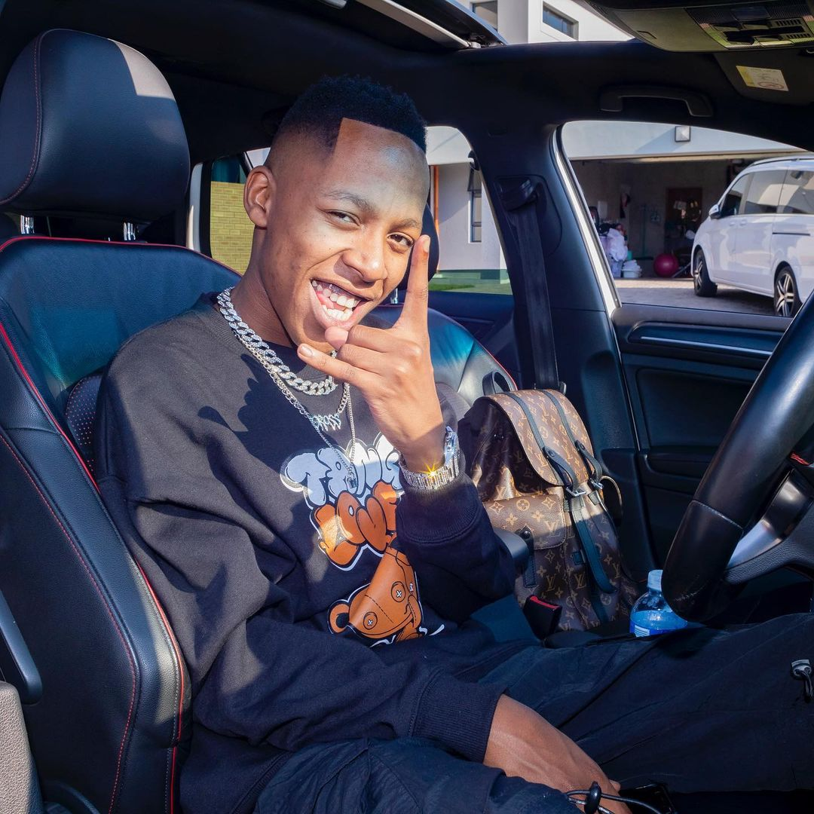

Vigro Deep SA is a South African DJ and music producer known for his
contributions to the Amapiano genre.
He gained popularity with his hit songs such as "Untold Stories" and "International."
Vigro Deep SA has collaborated with various artists in the South African music industry and
has released several albums and EPs. He is recognized for his unique style and ability
to create catchy and energetic Amapiano tracks.